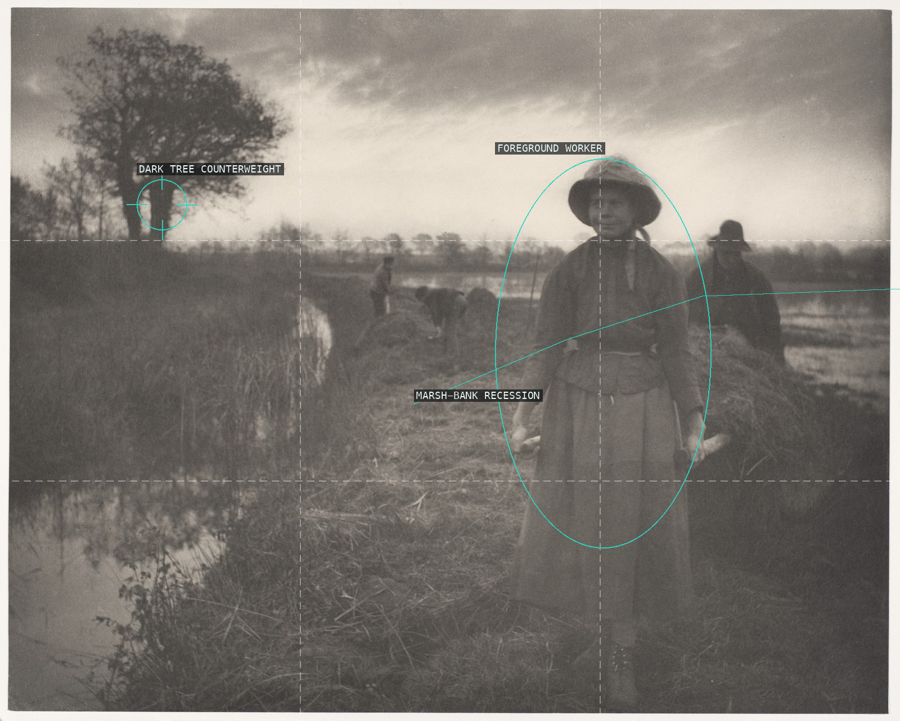
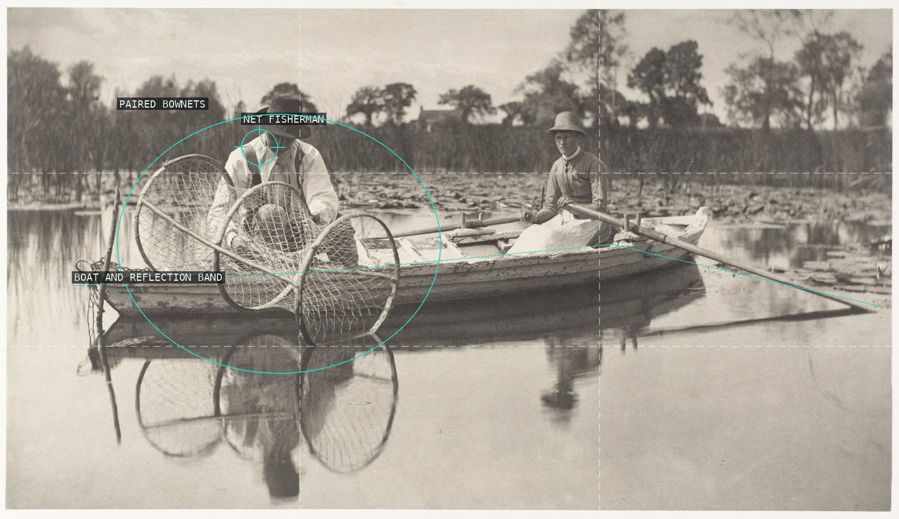
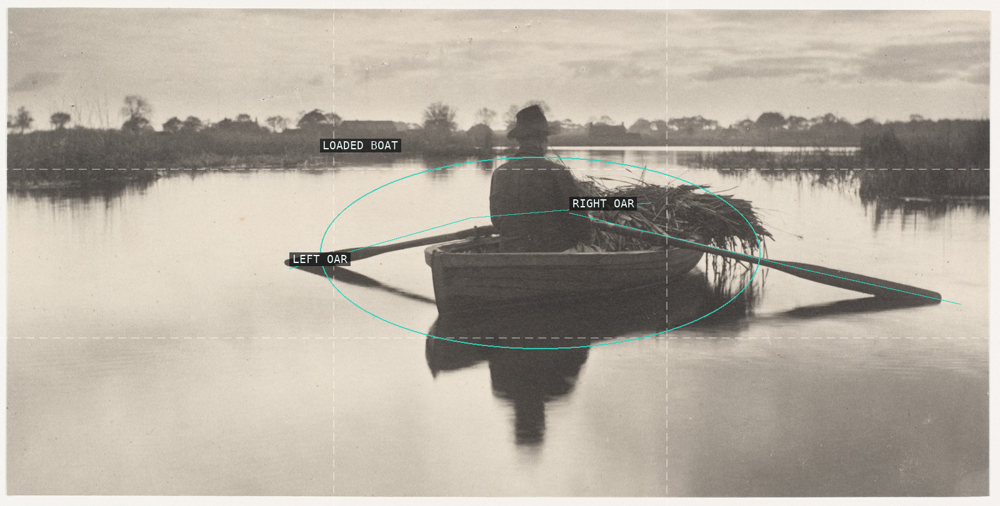
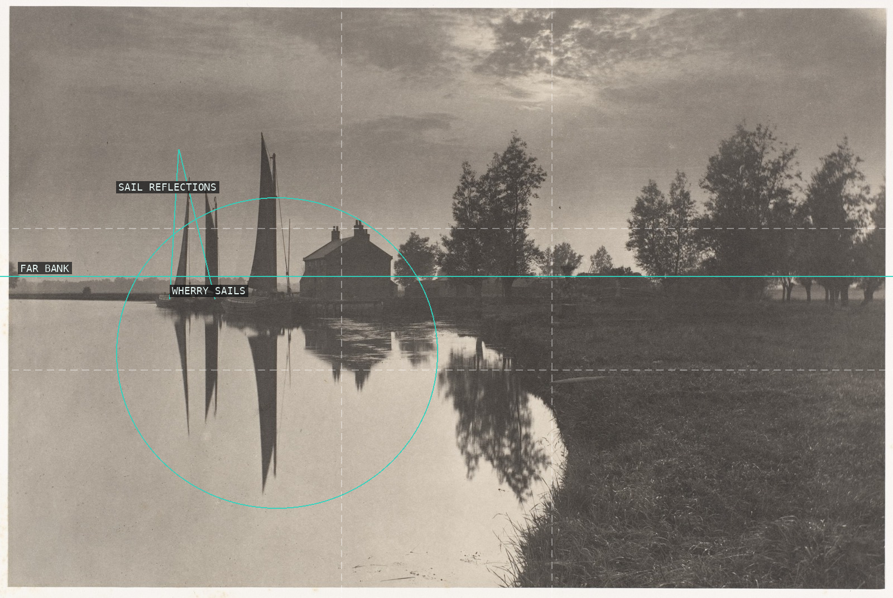
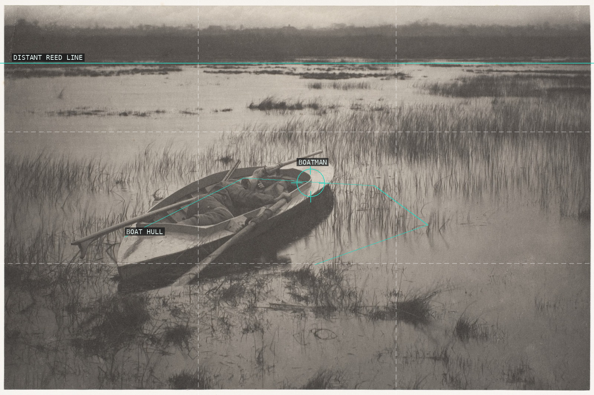
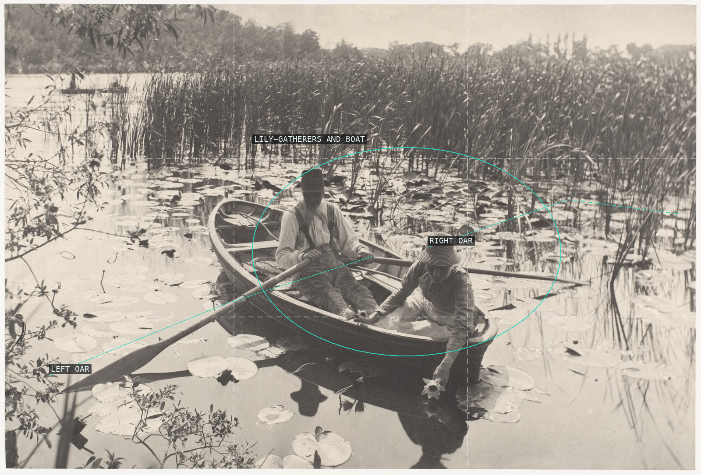
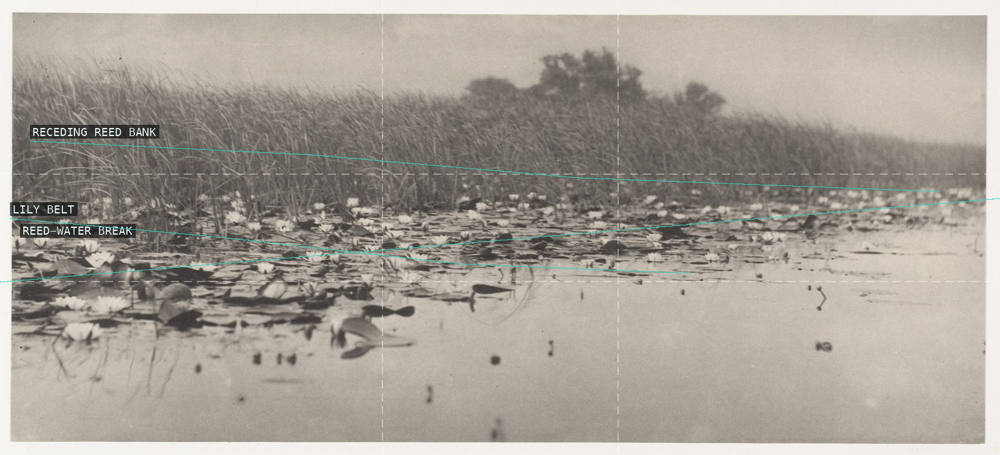
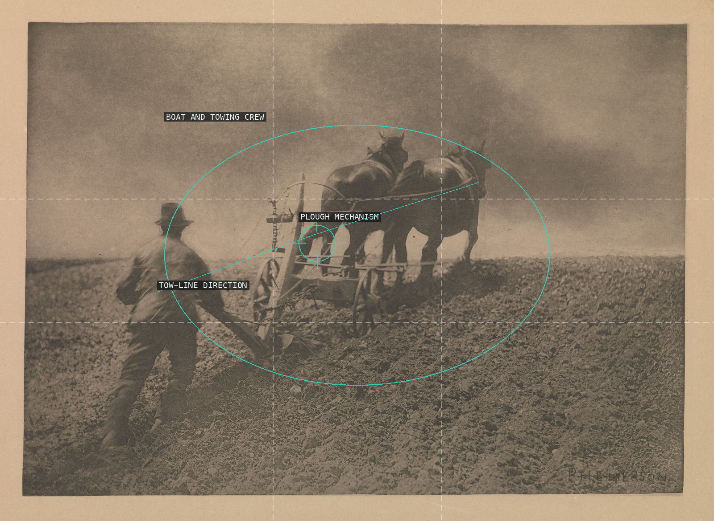
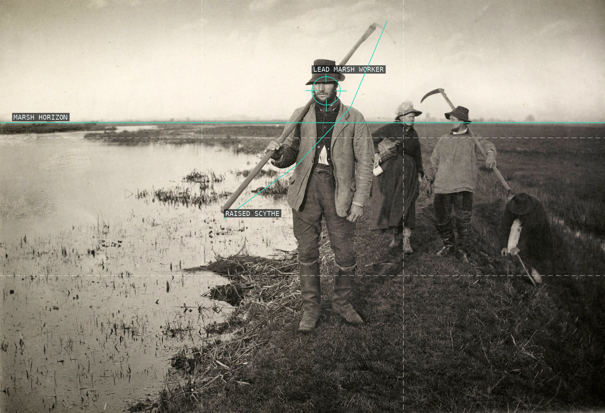
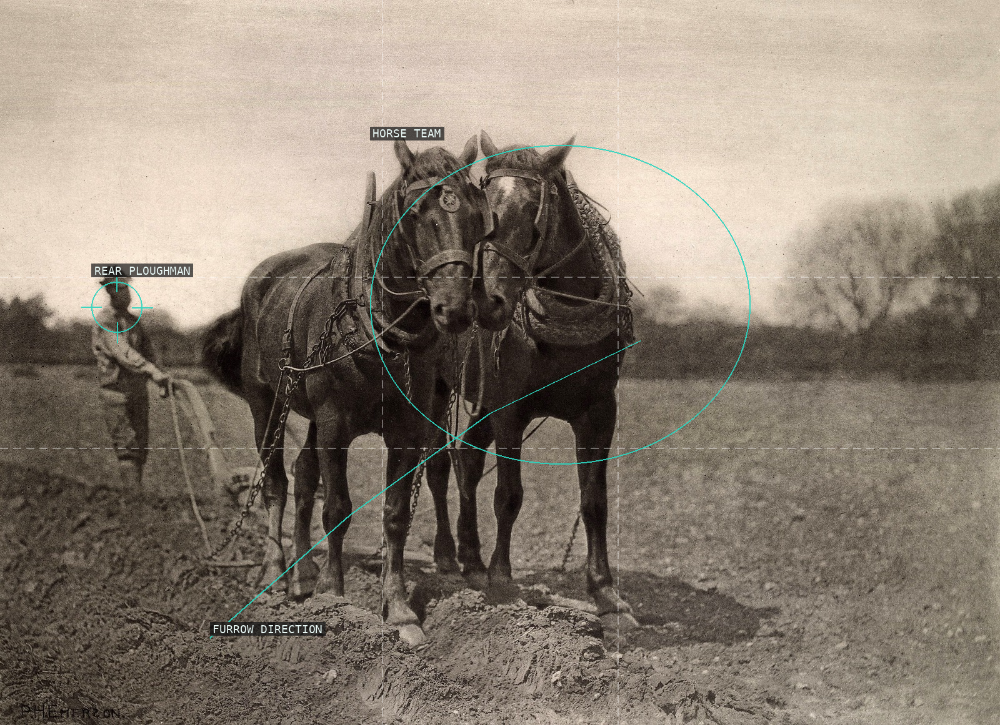

Worker, tree, and receding marsh bank.

Nets, boat, and reflection band.

Loaded boat held between oars.

Wherry sails and reflections.

Boatman framed by reeds.

Lily-gatherers, boat, and oars.

Reed bank and lily belt.

Horse team and plough.

Lead worker and raised scythe.

Horse team, ploughman, and furrow.

Teacher, table, and raised hand.

Fisherman, doorway figure, and workbench.